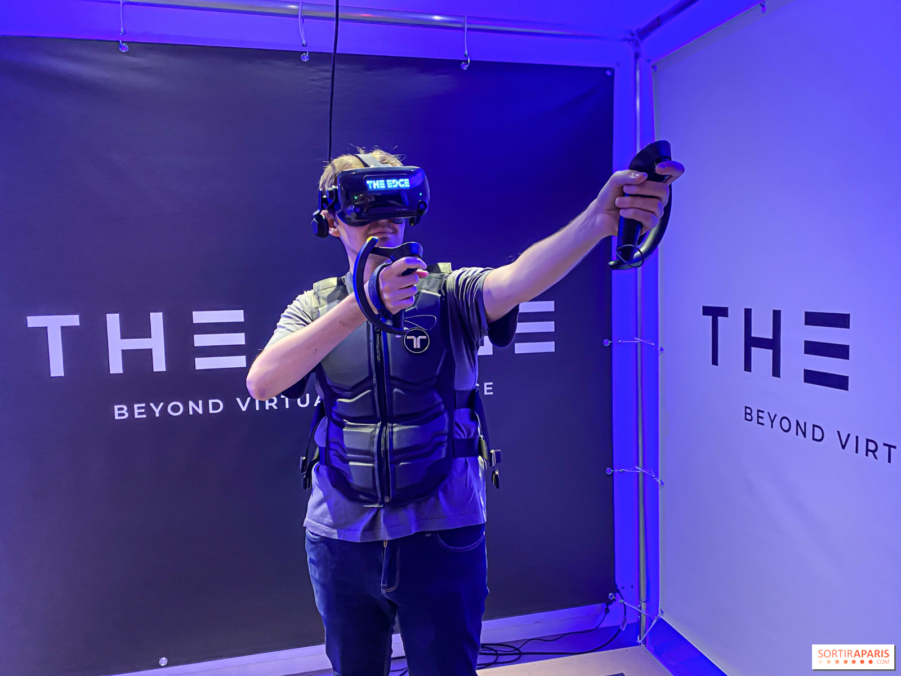

ACTUALIDAD
---------------------------------------------------------------------------------------------------------------------------------------------------
Antiguamente, el uso de dispositivos físicos como el mouse o el teclado eran las herramientas HCI, pero dificultaban la intuición y la naturalidad de la interfaz, y esto suponía una barrera para explotar en potencial del usuario con el ordenador. Por ello, poder interactuar con el sistema de la manera más natural posible es fundamental y cada vez más importante en esta disciplina. Por ejemplo, el uso de las manos como dispositivo de entrada es un método atractivo para proporcionar interacciones naturales, en vez de las interfaces de usuario basadas en textos
En el caso de la interacción por voz, se prevé que en los próximos cinco años la tasa de adopción de esta tecnología será mayor al 80%. Esto se dará teniendo en cuenta que es una tecnología fácil de usar por todo el mundo, rápida y efectiva. Probablemente, el tacto siga siendo la forma de interacción más usada, pero el uso de la voz va ganando terreno, sin haberse explotado aún todas las opciones porque es un método más profundo para interactuar con los dispositivos.
También, la realidad virtual y la realidad aumentada esperan un gran crecimiento en la próxima década. Facebook y Microsoft han comprado Oculus y se han introducido en el campo de la realidad virtual con HoloLens. Esto quiere decir que al introducirse grandes compañías la inversión será mayor y, por tanto, empezaran a surgir grandes avances.
Estas nuevas tecnologías de realidad virtual cambiarán la forma en la que se diseñan las interfaces de usuario e, incluso, la forma en la que se interactúe con los sistemas al igual que lo hicieron en su momento los teléfonos inteligentes. Las interfaces ya no estarán en las pantallas, sino que se encontrarán alrededor del mundo que nos rodea de manera 3D. Se espera que esta transición sea gradual, pero los diseñadores deberán familiarizarse con nuevas técnicas de diseño 3D para impulsar cada vez más la realidad virtual y la realidad aumentada.
---------------------------------------------------------------------------------------------------------------------------------------------------
